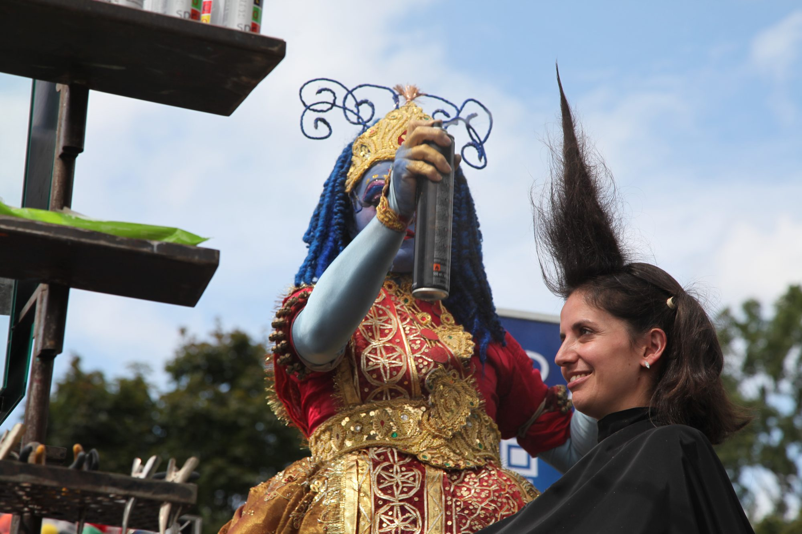

The magazine
Euphoric Cities
Research and opinion on the meeting point of cities, major events and culture, written in my own voice.
“I believe in the power of joy to make people more tolerant. And we all know about the power of fear to kill tolerance.”
Beatriz García
AI & I
A series documenting my journey as an academic, poet and writer trying to make sense of artificial intelligence.
Read the seriesThe book
Euphoric Cities is also the name of the book I am writing. More soon; subscribers hear first.
